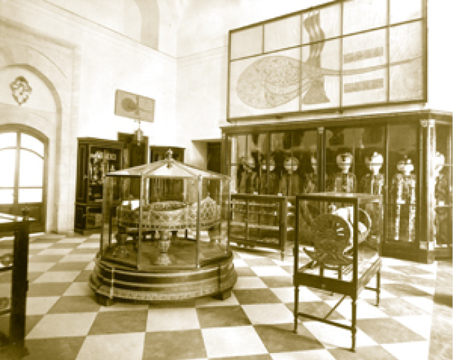
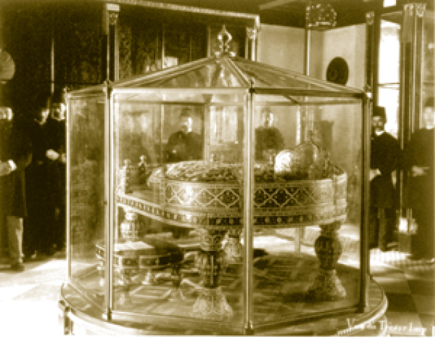
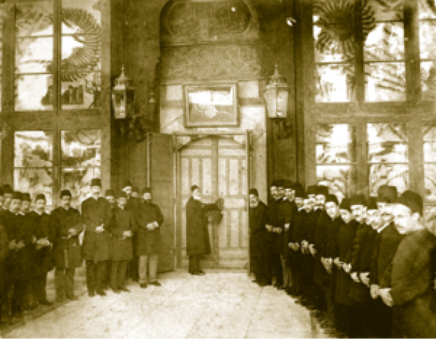
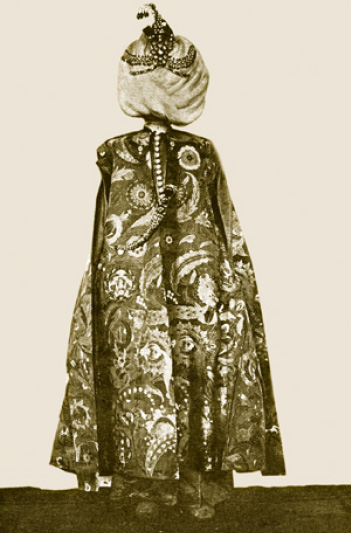
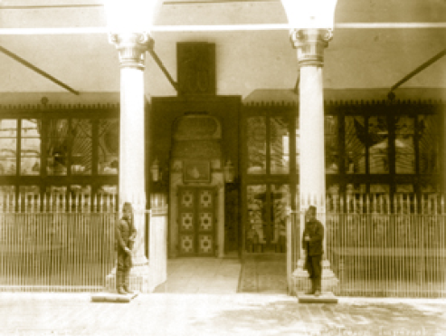
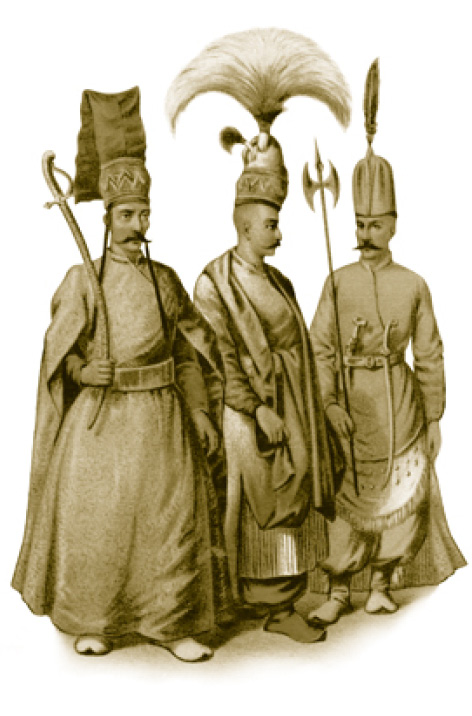

HAZİNE KÖŞKÜ (FATİH KÖŞKÜ-ENDERUN HAZİNESİ)
Bugün Hazine’nin sergilendiği bu köşk Sarayburnu’nun en hâkim ve cazip noktasında yer almaktadır. Önünde Üsküdar’dan Adalar’a kadar serilen bir manzara uzanmaktadır. Zemin olarak hiç de elverişli olmayan yamaca ustalıkla inşa edilen bu köşk, beş yüz yılı aşkın bir süredir ayaktadır.
1462-1463’te tamamlanan Fatih Köşkü, dış sofalı Türk evi planına göre kurulmuştur. Dört salon, iki salon arasında üstü kapalı etrafı açık ortada şadırvanı bulunan bir hayat (kapalı sofa) ve bir eyvandan ibarettir. Salonun ikisinde birer ocak vardır.
Köşkün avluya bakan yönünde dokuz sütuna dayanan düz tavanlı geniş bir revak vardır. Duvarları küfeki taşından yapılmıştır. Kapı ve pencere kanatları süslemelidir.
Hazine Koğuşu’yla, Enderun Hazinesi’nin amiri hazine kethüdasıdır. Hazine kethüdası, kendinden sonra gelen kethüdaya görevi devrederken aynı zamanda bütün hazineyi en ince teferruatına kadar devretmek mecburiyetindedir.
Hazine, Fatih’in torunu Yavuz Sultan Selim döneminde gerek Çaldıran gerekse Mısır seferlerinden getirilen ganimetle zenginleşmiştir. Hatta gelen bütün ganimetin daireye alınması mümkün olmamış, hazinenin bir kısmı Yedikule Mahzenleri’ne aktarılmıştır.
Yavuz Sultan Selim Han’ın, “Benim altunla doldurduğum hazineyi ahlâfımdan (benden sonra gelenlerden) her kim mangırla doldurursa hazine anın mührü ile mühürlensin ve illa benim mührümle mühürlenmekte devam olunsun)” yolundaki emri gereği Enderun Hazinesi’nin dış kapısı, saray müze oluncaya kadar bu surette mühürlenmiştir. Bu koyu yeşimden mamul mühür, hazinedarbaşında sonra hazine kethüdasında bulunurdu. Mührün üzerinde ortada Sultan Selim Şah yazısı, bu yazının etrafında da “Tevekkeltü alâ Hâlikî / Yalnız Allah’a güvenirim.” ibaresi bulunurdu.
Enderun Hazinesi (Hazine-i Hümâyûn) padişahın iradesine mahsus bir hazineydi. Burada bulunan altın ve gümüş, saray idaresinde; bayındırlık, imar ve hayır işlerinde kullanılırdı. Mısır’ın vergileri padişahın hususi harçlığı “cep harçlığı” sayılır. (Ceb-i Hümâyûn) Padişahların yaptırdıkları ve bir kısmı günümüze kadar ulaşan cami, çeşme, medrese gibi binaların giderleri bu hazineden karşılanırdı. Padişah savaş hâli gibi devlet maliyesinin sıkıştığı dönemlerde Enderun Hazinesi’nden devlet hazinesine usulen borç verirdi ancak bu parayı hiçbir zaman geri almazdı.

Sarayın müze olarak kullanıldığı ilk yıllarda sergilenen padişah kıyafetleri
Hazinenin diğer bölümü bir çeşit sergi salonuydu. Bu kısımda padişaha ganimet olarak düşen, elçiler tarafından getirilen veya satın alınan tarihî değeri yüksek eserler bulundurulurdu. Altın veya gümüşten kap kacaklar; ipek halılar ve seccadeler; çok değerli kürkler, mücevherli elbise ve kaftanlar; pırlanta, elmas, inci, firuze, yakut, zümrütten mamul mücevherat, sorguç, pazubent, eyer takımı, kemerler gibi eşyalar vardır. Bunlar dışında Yavuz Sultan Selim tarafından Mısır’dan getirilen ve Hz. Yusuf aleyhisselâmın sarığı olduğu rivayet edilen Yusufî sarık ile İmam-ı Azam’a ait taç ve amâme (sarık) ve İslâm büyüklerinden İbrahim Edhem hazretlerinin tacı ve diğer velilerin taç ve hırkaları da bu hazinede muhafaza edilirdi.
Köşk, tamamen hazine işlerinde kullanılması ve içinde paha biçilmez kıymette eserleri barındırmasından dolayı yer yer tadilatlar geçirmiştir. Sultan I. Mahmud devrinde bir oda daha ilave olunmuştur ki bu odaya elçilerin yanlarında götürecekleri kıymetli eşyaları emanet etmelerinden dolayı elçi odası ismi de verilmiştir.
Padişahların cülûs törenleri (Tahta Çıkma Töreni) esnasında hazinenin sergilenmesi âdet iken Sultan Abdülmecid zamanında hazinenin bir kısmı köşkün birinci odasında sergilenmiş, daha sonraki Sultan

Nadir Şah tarafından I. Mahmud’a hediye olarak
gönderilen taht ve etrafında saray memurları.
Abdülaziz ve Sultan II. Abdülhamid dönemlerinde birinci ve ikinci odalarda tahtlar, sultan kıyafetleri, vazolar, silahlar gibi eserler sergilenmiştir. Köşkün bu şekilde sergi salonu olarak kullanılması ve içindekilerin muhafazası kaygısı beraberinde yeni tadilatları getirmiş, bazı pencereler kapatılmış, bazı revaklar örülmüş ve köşkün orijinal mimarisi bozulmuştur. Bina köşkten ziyade ambara benzemiştir.
Sultan Reşad zamanında I. Dünya Savaşı’ndan dolayı saraydaki hazine eşyalarının güvenliği için İstanbul’dan Konya’ya gönderilmiştir. Cumhuriyet devrinde yapılan restorasyonlarla köşk orijinal hâline getirilmeye çalışılmıştır.
Hazinenin müştemilatı içinde Kilerli Koğuşu ve Hamam da bulunmaktadır. Kilerli Koğuşu, bugün müze idare binası olarak kullanılmakta olup Fatih zamanındaki orijinalliğinden çok şey kaybetmiştir. Köşkün sağ tarafında bulunan hamamın yerine ise Seferli Koğuşu yapılmıştır. Hazine Köşkü’nün eyvanı Fatih’in çok sevdiği bir mekândır ve devletin binbir türlü işi ve gailesi ile uğraştığı dönemde dinlenebildiği tek yerdir.

Hazine Dairesi’nin sergi salonu olarak kullanıldığı yıllarda dairesinin açılışı
Enderun Sistemi
Enderun, başlı başına bir müessesedir. Devşirme sistemiyle toplanan gayrimüslim çocukların sarayda eğitildikleri ve kabiliyetlerine göre yükselme imkânlarının bulunduğu bir yerdir. Genelde bu gençler devşirme sınıflarının en güçlü, en zeki ve en yetenekli olanların buraya ayrılırlar.
Devşirme, bir hayat tarzıdır. Bu çocuklar ön planda Türkçeyi ve İslâmiyet’in kurallarını öğrenirler. Enderun’a alınmayanlardan bilhassa yeniçeri acemi kışlalarına verilecek olanlar bir hazırlık olmak üzere hayatlarında “Türk’e verilmek” denen bir safhadan geçer. Bunlar İstanbul’a yakın Bursa veya Edirne köylerindeki köylülerin yanlarına gönderilir.
Yeniçeri adayının burada öğrendiği Türkçe ve din bilgisi çok önemlidir. Haddeden geçmiş bir medrese bilgisi ve dindarlığı yerine bu çocuklara bir halk adamının kullandığı Türkçe ve onun dinî âdetleri verilir ki özümsemenin nasıl olduğu ile ilgili bu keyfiyet çok mühimdir.
Devşirmeler bazılarının sandığı gibi zorla alınmaz, hatta bazı fakir köyler çocuklarının bu yolla kurtulacağına, yükseleceğine inanarak Osmanlılara vermeye gönüllü olurlar. Tabii, kaderde bir asker olarak savaşta ölmek de vardır, imparatorluk yönetiminin ikinci adamı yani başvezir olmak da... Devşirilen çocukların kimisi bir yeniçeri neferi olarak kalacaktır, kimisi Sokullu Mehmed Paşa, Mahmud Paşa gibi koca imparatorluğun kaderini elinde tutan başvezirler olacaktır. Her devşirme de köylü değildir, bazen çok önemli ailelerin çocukları da ebeveyni ikna yoluyla alınabilir.
Enderun bir müessesedir. Buradaki eğitimle imparatorluğun yönetici sınıfı yetiştirilir. Büyük kısmı itibariyle Balkanlar’ın, Kafkaslar’ın ücra köylerinden devşirilen gençlerin, burada eğitilip nasıl üstün bir sınıf meydana getirdiğini görürsünüz. O kadar ki hem fizikleri, hem duruşlarıyla etrafı etkileyen bu devletlilerin, kendilerinin bir devlet imajını meydana getirdiğini söylemek hiç mübalağa sayılmaz. Saray dışına çıktıkları vakit yürüyüşlerinden, konuşmalarından, hâl ve tavırlarından Enderun terbiyesi aldıkları belli olur. İstanbul’a gelen her yabancı ve seyahatnâme yazarı onların katıldığı bir resmigeçidi resmetmekten ve onları uzun uzadıya tasvir etmekten kendini alamamıştır. Törenlerde ve sarayın dışında Kılıç Alayı, Cuma Selamlığı gibi merasimlerde Enderunluların zaten buraya gelmelerine neden olan fizikî heybetleri dışında kılık ve kıyafetleri ve özellikle “peyk” denen refakatçilerin sorguçları sadece etraftaki halkı değil, başkente gelen ecnebileri bile çarpmıştır. Seyahatnâmelerde, Osmanlı törenlerindeki devletlûların bakır baskı gravürleri bulunmayanları pek azdır. Tevekkeli değil, meşhur nüktedir; bu mutantan alayı seyreden fakir Bektaşî dervişi semaya bakmış: “Hey Allah’ım, bir padişahın kullarına bak, bir de şu fakir kulunun hâline...” demiş.
Enderunluların içinden müstesna müzisyenler çıkmıştır. Rekorları itibariyle tarihe geçen sporcular çıkmıştır. Edebiyat sahasında, felsefede ismi geçenler çıkmıştır. Unutmamak gerekir ki imparatorluk kendini yönetecek sadık komutanları bu ocakta yetiştirmiştir. Ama her şeyden evvel Osmanlı tarihinin en az üç asrında etkili olan komutanlar Enderun’dan çıkmadır. Buradan çıkan insanlar; vezir olmuştur, Yeniçeri Ocağı ağalığı yapmıştır, devlet kademelerine hatta birçok memuriyete dahi ağırlığını koymuştur; içlerinden imparatorluğun şeyhülislâmı dahi çıkmıştır ama hiçbir zaman için padişahın kulları, padişahın hizmet sınıfı olduklarını unutmamışlardır. Devlet fikrini, devletin bütünlüğünü çok iyi kavramışlardır. Tıpkı Sokullu’nun yeğeni Mustafa Paşa’nın Budin Beylerbeyi olması gibi... Günün birinde de bir atlas torba içinde çavuşbaşı ile gelen idam fermanını boyun eğerek kabul eder. Çünkü devletten başka Enderunlunun güveneceği makam yoktur.
Hiç şüphesiz Enderun’a uğramayan devşirmeler de vardır ve çoğunluğu acemioğlanı olarak ayrılan bu çocuklar, İstanbul’un civar köylerinde, köylülerin yanında dini de, dili de öğrenirlerdi ki, onların içinden de böyleleri çıkmıştır, ama Enderunlunun tavrı ve havası değişik ve seçkincedir.
Enderun, aristokrasinin irsî olmasa da eğitimle, liyakatle ortaya konabileceğini gösteren bir okuldur. “İmparatorluk okulu” unvanı buraya çok yakışmaktadır. Enderun üzerindeki tetkikat hemen hemen tamamen ecnebiler tarafından yapılmıştır. Çünkü Osmanlı yönetimini esasından kavramak istemişlerdir.
19. yüzyıl Osmanlı Sarayı’nın idarî bünyesi içinde eski Enderun yaşamakla beraber, ağırlığını ve geleneğini kaybetmiş ve “Ağavat Ocağı” denen Enderun Ağaları Ocağı, Dolmabahçe Sarayı’nın bir kıyısına sığınmıştır. Sarayın asıl görevlileri artık askerî ve mülkî erkânın yetiştiği, imparatorluğun XIX. yüzyılda kurulan modern okullarından gelmektedir. Özellikle II. Abdülhamid tedrisat ve tahsil derecesini yükselttiği Mekteb-i Mülkiye’nin başarılı mezunlarını Kitabet Dairesi’ne aldırtmaktadır. Onun hâl’inden sonra saray muhafız kıtalarındaki alaylı zâbitan da artık görülmeyecektir.
Enderun’da Hayat
Enderun başlı başına bir terbiye müessesesidir ve onun tarihini günümüze bakan çok taraflarıyla iyi bilmek gerekmektedir. Burada insanlar birbirleriyle rütbeye göre “siz” diye konuşurlar, gençlerin kendi aralarında dahi lâubalî olması mümkün değildir. Koğuş zabitlerine, koğuşun başlarına son derece saygılı olmak zorundadırlar.
Yeme içme, yıkanma, kalkma, yatma saatleri konusunda büyük bir disiplin içindedirler. Devamlı bir surette gece gündüz kontrol altındadırlar. Koğuşlarda kandil yakılır. Dış dünyayla temas kurmaları istenmez. Enderun’daki disiplin dolayısıyla çok kısa zamanda bir Osmanlı saray protokolü meydana gelmiştir. Daha da ilginci Enderun’un dişi bir izdüşümü vardır. O da bizatihi Harem’in kendisidir. İşte buna bazı tarihçiler; Osmanlı Saray Medeniyeti diyorlar ki bu doğrudur. Burada tarihi magazinleştirmeye çalışanların uydurdukları ve kimi zaman gündeme getirdikleri bazı hususları ciddiye dahi almamak gerekir; “Enderun oğlanı” gibi avamî tabirlerin geçerliliği yoktur.
Enderun çetin bir hayatın yaşandığı yerdir. Saray okuludur; ama bizim anladığımız anlamda bir okul değildir. Buraya gelen çocuklara Osmanlı-Türk kültürünün, İslâmiyet’in derinlikleri hocalar tarafından öğretilir. Bunlar bildiğimiz kimselerdir. Nitekim Osmanlı tarihinin musiki dallarında yükselen devlet adamlarının bu ocağında Ali Ufki Bey diye bildiğimiz Albert Bobovius de vardır. Daha sonra Enderun yılları üzerine eser kaleme almıştır. Hayat ve kültürün her dalına girenler vardır. Hatta yüksek din bilginleri bile çıkmıştır.
Enderun talebelerinden küçük ve büyük odalarda hem saray hizmetlerine bakan, hem adab-ı muaşeret öğrenen, hem biraz ilim ve sanata vâkıf olanların değeri ve liyakati anlaşılınca, onlar bizzat padişahın emri üzerine üst düzeye geçerler.
Ağalar sabah ezanıyla uyanır; eğer gerekiyorsa hamama gidilir, sabah namazı mutlaka Ağalar Camii’nde cemaatle kılınır, daha sonra günlük hayata başlanır. Sofrada dikkatsiz ve usulsüz bir davranışta tekdir veya ele kepçe vurmak gibi bir mukabele görülür. Ağaların lâubali hitaplarda bulunmaları, edepsiz tavırlar göstermeleri, serkeşlik etmeleri, sıkı giyim kurallarının dışına çıkmaları şiddetle cezalandırılır. Bununla birlikte Enderun’daki ağaların yani genç talebelerin birbirlerine taktıkları lâkap, hayat boyu üzerlerinde kalır. Aynı âdet yeniçeri ocağında da vardır. “Tabanıyassı”, “Boynueğri”, “Semiz” gibi vücut özelliklerini veya “Öküz”, “Kalaylıkoz”, “Yahnikapan” gibi karakter zafiyeti gösteren lâkapları taşıyan vezir ve vezir-i âzamları hatırlarız. Bu anane modern eğitim kurumları olan Galatasaray’da ve Mülkiye’de de devam eder.
Seferli Koğuşu
Enderun’un ilk iki odasından sonra terfi edilen Seferli Koğuşu, 17. yüzyılda Sultan IV. Murad’ın koğuştaki ağaları sefere götürmesinden sonra ortaya çıkmıştır. Sultan IV. Murad bir harbin zor şartları içinde, ona hizmet edecek gençleri bu bölümden almıştır. Onun için adı Seferli Koğuşu’dur.
Koğuş kapısındaki kitabede Sultan Mehmed Reşad tarafından tamir ettirildiği için Sultan Reşad tuğralı bir kitabe bulunmaktadır.

Sultan II. Bayezid’in kıyafeti
Bu bölümde 1509’da depremde tahrib olan büyük hamam, küçük ve büyük odaların hamam ihtiyacını karşılardı. Ne var ki hamam muhtemelen su tesisatının binayla bağdaşamamasından dolayı çökmüştür, 16. asırdaki bu önemli çöküntüden sonra büyük bir tamirat yapılmıştır ve 17. asırda hamam olarak kullanılmasından vazgeçilen bu bina Enderun ağalarına tahsis edilmiştir. Enderun ağalarının bu koğuşta yaşayanları artık ilk iki koğuştaki dolamalılardan terfian kaftanlı dediğimiz sınıfa geçen ilk seçkin zümreyi meydana getirir. IV. Murad bu sınıfı sefer-i hümâyûna birlikte götürdüğü için Seferliler Koğuşu, Seferli Enderun Ağalarının Koğuşu olarak adlandırılmıştır. Mahiyeti değişmiş, ağaların terfi şansı artmıştır. Sultan I. Ahmed, 16. yüzyılda yıkılan bu koğuşu tahrib olmuş hamamı tamamen ortadan kaldırarak yeniden inşa ettirmiştir. Sonradan sadece Seferliler Koğuşu olarak adlandırılan hünkâr hamamından günümüze kalan yadigâr “elbise-i hümâyûn” diyeceğimiz saraydaki kumaşların, kaftanların, padişah ve şehzade elbiselerinin teşhir edildiği bölümdür. Günümüze kadar ulaşan binada hamam olarak kullanıldığı devre ait kitabede Sultan II. Selim devrinde yapılan tamirattan bahsedilmektedir.
Kuruluşundan itibaren diğer koğuşlara oranla bir kademe daha yüksek eğitim veren Seferli Koğuşu, ilk kuruluş yıllarında, Enderun halkının çamaşırlarının yıkanması ve Enderun’un tertip, düzen ve temizliğinin sağlanması gibi işler yaparken daha sonra çalışmalar mesleki alana ve sanata kaydırılarak, kemankeş, pehlivan, hanende, berber yetiştirilmiştir. Ayrıca padişahın çamaşırlarının yıkanması ve katlanması bu koğuştakilerin görevidir. Padişahın camide namaz kılacağı seccadesini de Seferli Koğuşu’nun ağası sererdi. Saray cüceleri ve dilsizleri de burada eğitilirlerdi. Bu odanın kıdemlilerinden başkullukçu haftada iki defa Destar-ı Hümâyûn denilen padişahın sarığıyla abdest havlularını yıkardı.
Kilerli Koğuşu
Baştan beri bugünkü hazine dairesine bitişik olan ve Fatih Sultan Mehmed tarafından yaptırılan bölümler, Enderun’un “Kilerliler” ve “Hazinedar” koğuşlarıdır.
Burada bulunan iç oğlanları bir yandan eğitim görürlerken öte yandan çeşitli vazifeler yaparlardı. Kilerli Koğuşu hem kilere hem padişaha hizmet etmeye bakan bölümdü ve burada padişaha çok yakın, muteber saray mensupları vardı. Kilerli Koğuşu’nun en mühim vazifesi padişah sofrasını hazırlamaktı. Padişahın yemeğini pişirmek, sofra kurmak, servis yapmak, sofrayı toplamak, bulaşıkları yıkamak onların vazifesi idi. Şerbetler, şuruplar, macunlar hazırlarlardı. Bunun dışında Harem’in kiler ihtiyacını (her türlü yiyecek ve içecek ihtiyacı) karşılar ve muhafaza ederlerdi. Saray odalarının, mescitlerinin, Hırka-i Saadet Dairesi’ndeki büyük şamdanın mumlarını da temin eder ve yakarlardı.
İcap ettiğinde ilaçların hazırlanmasından da kilerciler mesuldü. Koğuş kapısının dışında Eczahane de denilen Hekimbaşı Odası bulunurdu. Burada koğuşlarda hastalananlar için ilaçlar yapılırdı. Bütün vazifeleri yerine getirme sırasında kilercilerin abdestli olması da koğuşun nizamı dâhilindeydi. Kilerliler Koğuşu’nun mesuliyeti altındaki işler belli bir nizam dâhilinde ve iş bölümü hâlinde yapılırdı. Kilercibaşı, sarayda bu görevleri yerine getiren birkaç yüz kişinin başıydı. Görevine Birun denen dış avludaki Matbah-ı amire halkını yönetmek dâhildi.
Kilerli Koğuşu, nisan yağmurlarını biriktirerek padişaha takdim ederlerdi. Padişah da onlara bu hizmetleri karşılığında bahşiş verirdi.
İç oğlanları yüksek derecede eğitim görürler, ayrıca üç ayda bir aldıkları maaş yanında pek çok ad altında ek ücretler alırlardı.
Kilerli Koğuşu ahşap ağırlıklı bir yapıydı. Binanın alt katında iç oğlanların yatakhaneleri, üst katta ise padişah sofrasında kullanılan altın ve gümüş tepsiler, yemek takımları, yemişler, şerbet ve şuruplar bulunurdu. Saray için hususi imal edilmiş mumlar da burada saklanırdı. 1856 yangınında kullanılamaz hâle gelen koğuş yeniden inşa edilmiştir. Bugün burada Topkapı Sarayı Müze Müdürlüğü bulunmaktadır. Koğuşun altında Kemeraltı Dehlizi’nden dördüncü avluya çıkan bir kapı vardır.
Hazinedar Koğuşu
Enderun avlusundaki iç hazinenin (Enderun Hazinesi) ve saraya ait mücevherat ve kıymetli eşyanın sorumluluğu bu koğuşa ait olduğu için Hazinedar Koğuşu denilmiştir. Bu yapıdan geriye bugün koğuşun ön tarafında bulunan siyah beyaz çakıl taşlarından yapılma (podima çakılı) kaldırımı kalmıştır. Koğuşun amiri sarayın önde gelen görevlilerinden hazinedarbaşıydı ve yardımcısı hazine kethüdası idi. Kuyumcu, nakkaş, kılıçcı, terzi, kürkçü, sorguçcu vb. ehl-i hiref (Meslek sahipleri) saray zanaatkârları hazinedarbaşıya bağlıydı. Bunların sayısı bazı hâlde ve zamanda birkaç bine ulaşmıştır.
“Kilerli” ve “Hazinedar” koğuşundakiler saray dışı hizmetlere tayin edildiklerinde yani “Birun”a çıktıklarında sancakbeyi rütbesi ile göreve başlarlardı.
Hazine Koğuşu binası sol tarafındaki Kilerli Koğuşu ve sağ tarafındaki Silahdar Koğuşu ile bitişik iken 19. yüzyılın ilk yarısında yıktırılarak yeniden inşa edilmiş ve Sofa-i Hümâyûn’a geçen ara geçitler yapılmıştır. 1856 yangınından sonra Sultan Abdülmecid tarafından restore ettirilmiştir. Hazine Koğuşu bugün Türk-İslam kitap sanatları, padişah portreleri koleksiyonu sergi salonu olarak kullanılmaktadır.
Silahdar Hazinesi
Silahdar Hazinesi, Hırka-i Saadet Dairesi’nin hemen bitişiğinde yer alır. Silahdar ağanın muhafazasında bulunan kıymetli eşya, padişaha ait kılıç, kalkan, zırh, bozdoğan gibi çeşitli silahlar Has Oda’ya ve Sofa Köşkleri’ne ait altın şamdanlar, padişahın “cep harçlığı” olarak kullandığı ve hazine dairesine koymadığı bir miktar para, Has Oda’ya konulmayan Mukaddes Emanetler, yenileri gönderildikçe eskileri İstanbul’a getirilen Harem-i şerif puşideleri, eski Kur’an-ı Kerimler ve çok kıymetli yazma kitaplar burada saklanırdı. Silahların her zaman temiz tutulmasına çok ehemmiyet verilirdi.
Silahdar Hazinesi’nin Arzhâne’ye de kapısı bulunmaktadır. Anahtarı Silahdar ağada bulunan hazinenin defteri sır kâtibi ve hazine başyardımcısı tarafından tutulur ve mühürlenirdi. Defter, padişaha verilirdi. Silahdar ağalık padişahın yakınında bir vazife olduğu için çok önemli bir vazifeydi. Meşhur paşalardan Çorlulu Ali Paşa ve Girit’i kuşatan komutan Yusuf Paşa da silahdar ağaydılar. Günümüzde bu mekân Mukaddes Emanetler’in sergi salonu olarak kullanılmaktadır.

Hazine Dairesi önünde nöbet tutan askerler

Silahdar Ağa, Peyk ve Solak (Ressam Brindesi)